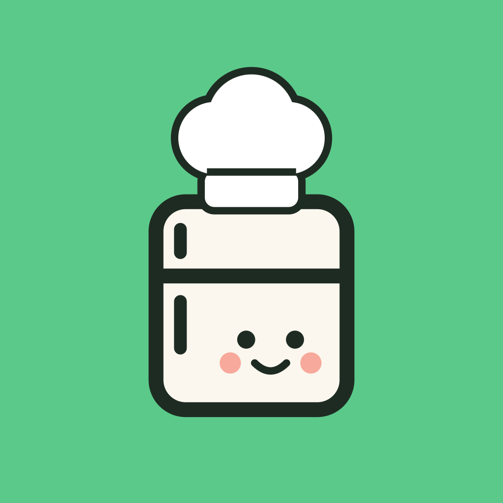

Chef Frosty
Snap your fridge, get dinner
Need help? 👋
Hi, I'm Alex, the developer of Chef Frosty. If something isn't working, or you'd like a recipe or ingredient added, write to me. I read every message.
alexandre.bruffa@gmail.comFrequently asked questions
The scan missed some of my food
Chef Frosty recognizes food on your phone, without the internet, so it works best with a clear, well-lit photo. After every scan you can tick or untick foods and add anything it missed before it goes into your fridge.
The camera or my photos won't open
Chef Frosty needs access to the camera or your photos to scan your fridge. Open your phone's Settings, find Chef Frosty, and allow Camera and Photos. Then come back to the app.
I'm not getting expiry reminders
Reminders are part of Chef Frosty Pro. In the app, open Settings and turn on "Expiry reminders", then allow notifications if your phone asks. You can also allow them in your phone's Settings, under Chef Frosty.
Are the expiry dates exact?
No. They're estimates based on how long each food usually keeps. You can change any date by tapping the food in your fridge. Always check the package, and trust your eyes and nose.
I bought Pro but features are still locked
In the app, open Settings and tap "Restore purchase". Make sure you are signed in with the same Apple ID or Google account you used to buy Pro.
Do I need to pay again on a new phone?
No. Pro is a one-time purchase. On a new phone with the same Apple ID or Google account, tap "Restore purchase" in Settings.
Where is my fridge list stored?
Only on your phone. Your foods, shopping list and settings never leave it.